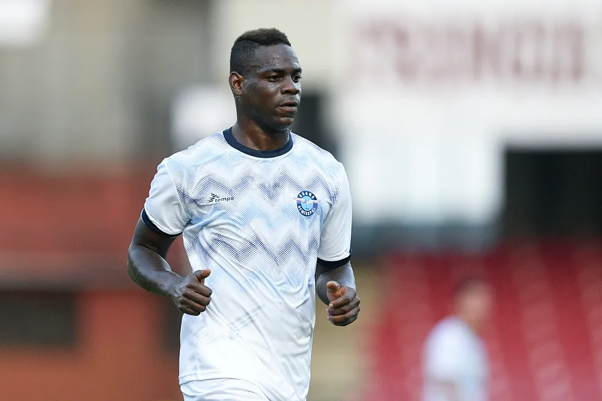

Mario Balotelli
Nascido em Palermo, no bairro de Borgo Nuovo, Mario Balotelli é filho de Thomas e Rose Barwuah, dois imigrantes ganeses. Pouco depois do nascimento, seus pais se mudaram para a cidade de Bagnolo Mella, na província de Bréscia. Mais tarde, ele teve complicações potencialmente fatais no intestino, fato que o levou a uma série de operações, vindo a se recuperar plenamente apenas em 1992. Os médicos cuidaram de Mario até que ele tivesse cerca de dois anos de idade.[10]
Sua debilitada condição de saúde após o nascimento, aliada a uma difícil situação financeira vivida pela família Barwuah, fizeram com que seus pais concordassem em entregar o menino de três anos de idade para adoção e, em 1993, Mario passou a viver com a família Balotelli, de Concesio, também na província de Brescia.[11] Lá, ele foi criado por Francesco e Silvia Balotelli, seus pais adotivos, junto com os outros três filhos do casal, dois homens e uma mulher. Os dois irmãos maiores, Giovanni e Corrado, ajudaram os pais a cuidar de Mario e o acompanham na sua carreira até hoje, como procuradores do atacante.[12][13]
Quando Mario adquiriu certa fama atuando pela Internazionale, seus pais biológicos pediram que ele voltasse a visitá-los regularmente.[14] O pedido foi prontamente recusado pelo jogador, que afirmou ser este um interesse financeiro:
“ Por que eles nunca pediram aos tribunais que eu retornasse, uma vez que já tinha me recuperado da doença? Meus pais adotivos me levavam até lá para vê-los, mas eles nunca estavam em casa. Agora eu sou um jogador da Serie A e eles querem vir e me encontrar. ”
— Balotelli, sobre seus pais biológicos[15]
Com base na Lei n. 91 de 5 de fevereiro de 1992, Balotelli precisou esperar até que completasse 18 anos para requerer a cidadania italiana.[16] No dia 13 de agosto de 2008, em uma cerimônia oficial, o prefeito de Concesio lhe entregou sua carteira de identidade italiana tornando-se, assim, cidadão italiano, o que lhe deu o direito de jogar pela Itália.[17][18]
“ Sou italiano, me sinto italiano, jogarei sempre com a Seleção Italiana.[19] ”

carreiralumezzane
Foi revelado pelo Associazione Calcio Lumezzane, modesto time da cidade de Lumezzane que joga a terceira divisão italiana. Com apenas 15 anos, foi promovido ao time principal, estreando profissionalmente numa partida contra o Padova, sem muito destaque.[1]
 Internazionale
Internazionale
Balotelli assinou com a Internazionale em 2006, após poucas partidas pela equipe principal do Lumezzane durante o segundo turno da temporada 2005–06. Como ainda era muito jovem, com apenas 16 anos, foi inicialmente integrado às categorias de base do clube de Milão, e logo chamou a atenção de seus primeiros treinadores.